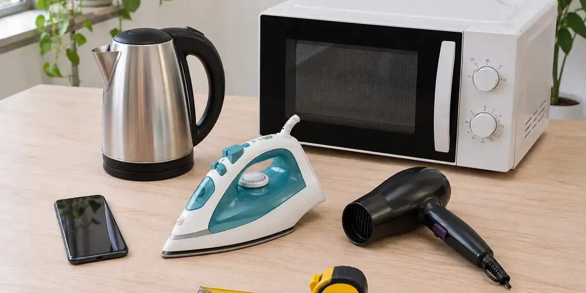
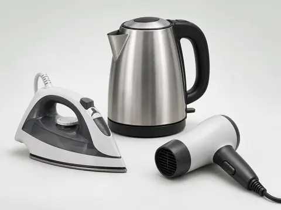
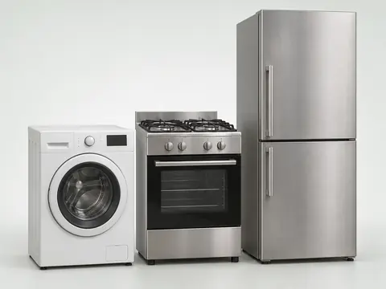
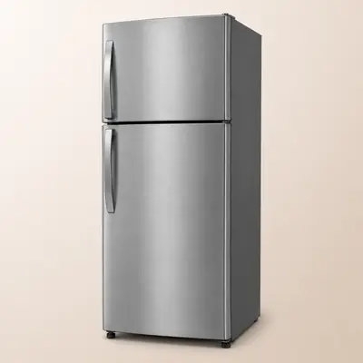
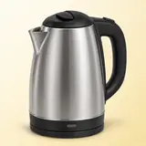
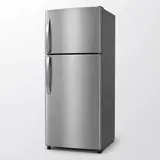
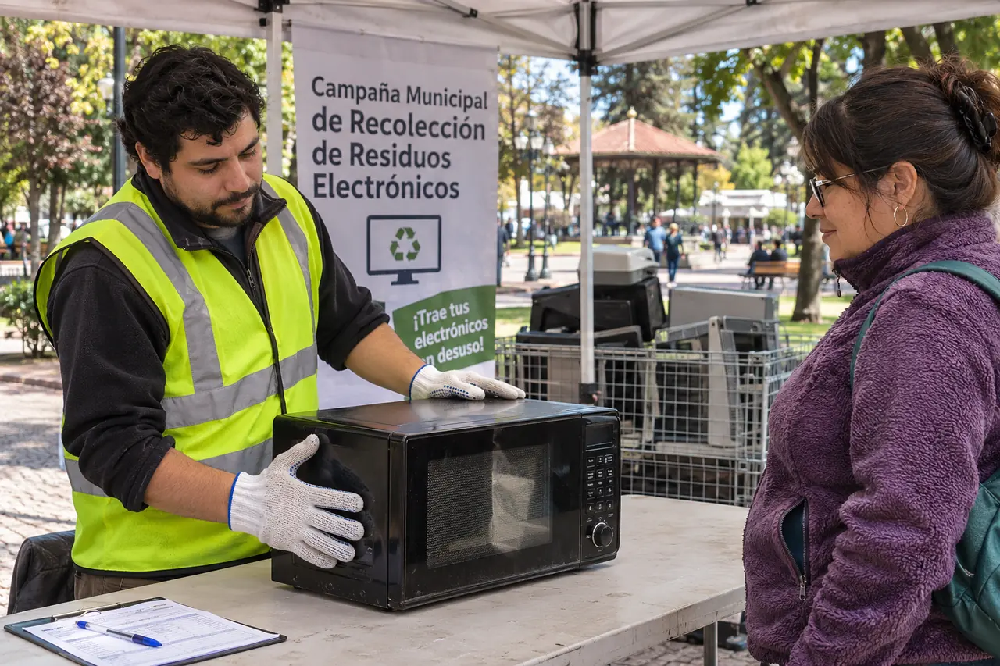

¿Qué es un aparato pequeño? Tamaño de los aparatos en una campaña
Qué cuenta como aparato pequeño o grande, con ejemplos, qué dice la normativa chilena y cómo influye el tamaño al organizar la campaña.

Qué dice la normativa chilena
Ni la Ley 20.920 ni el DS 22/2025 clasifican los aparatos por su tamaño. El DS 22/2025 los agrupa en tres categorías:
- Aparatos de intercambio de temperatura: los que enfrían, calientan o deshumidifican con sustancias distintas del agua, como gases refrigerantes o aceites; por ejemplo, refrigeradores y aire acondicionado.DS 22/2025, art. 2 n.° 1DS 22/2025, art. 4
- Paneles fotovoltaicos: desde 0,25 m²; los más pequeños cuentan como «otros aparatos».DS 22/2025, art. 2 n.° 12
- Otros aparatos eléctricos y electrónicos: todos los demás.DS 22/2025, art. 2 n.° 11
Para la campaña, el DS 29/2024 pide describir los equipos y contenedores con su tipo, material y dimensiones.DS 29/2024, art. 24 c
Qué es un aparato pequeño
Para organizar la campaña usamos la referencia de la normativa europea de residuos de aparatos eléctricos y electrónicos (Directiva 2012/19/UE): un aparato es pequeño si ninguna de sus medidas exteriores supera 50 cm, y grande si alguna la supera.

PequeñosNinguna de sus medidas supera 50 cmCelulares, notebooks, tablets, routers, cámaras, consolas, hervidores, secadores de pelo, planchas, tostadoras, licuadoras, aspiradoras de mano, herramientas eléctricas pequeñas y muchos microondas.

GrandesAlguna de sus medidas supera 50 cmLavadoras, secadoras, lavavajillas, cocinas y hornos eléctricos, impresoras de oficina y televisores o monitores grandes.

De intercambio de temperaturaCualquier tamañoRefrigeradores, congeladores, aire acondicionado y otros aparatos que enfrían, calientan o deshumidifican con gases refrigerantes o aceites. Se reciben enteros y aparte.
En la ficha, los computadores y las pantallas van en su propio grupo, sean pequeños o grandes.
Medidas de referencia
Medidas aproximadas de aparatos comunes, para saber en qué grupo va cada uno. Lo que vale es la medida de tu aparato.
| Aparato y grupo en la ficha | Medida aprox. |
|---|---|
| 15 a 25 cm | |
 Hervidor, plancha o secador de peloPequeños aparatos | 20 a 30 cm |
| 45 a 50 cm de ancho | |
| 30 a 40 cm | |
| 73 o 123 cm de ancho | |
| 60 × 85 cm | |
 RefrigeradorGrandes aparatos; se recibe entero y aparte | 1,4 a 1,8 m de alto |
Cómo influye el tamaño en la campaña

- Recepción: los pequeños se reciben en mesones y contenedores; los grandes necesitan una zona de carga, acceso para vehículos y ayuda para bajarlos.
- Contenedores y transporte: el tamaño y la cantidad definen cuántos contenedores, cuánto espacio y qué vehículos se necesitan.DS 29/2024, art. 24 cDS 29/2024, art. 24 j
- Retiro domiciliario asistido: pensado para aparatos grandes de quienes no pueden llevarlos al punto. Al inscribirse se indica el tipo, la cantidad, las medidas y el estado de cada aparato.
- Peso estimado: en la ficha indicas el peso total aproximado de todo lo que esperas recibir; los tipos y cantidades se precisan en la reunión.
Preguntas frecuentes
¿Un microondas es pequeño o grande?
Depende de sus medidas: si ninguna supera 50 cm, cuenta como pequeño. Muchos microondas de uso doméstico miden entre 45 y 50 cm de ancho.
¿Un refrigerador se recibe como aparato grande?
Es un aparato de intercambio de temperatura: puede contener gases refrigerantes o aceites, por eso se recibe entero y aparte, cualquiera sea su tamaño.
¿La ley chilena define qué es un aparato pequeño?
No. La Ley 20.920 y el DS 22/2025 no clasifican los aparatos por tamaño. El criterio de 50 cm es una referencia práctica de la normativa europea que usamos para organizar la campaña.